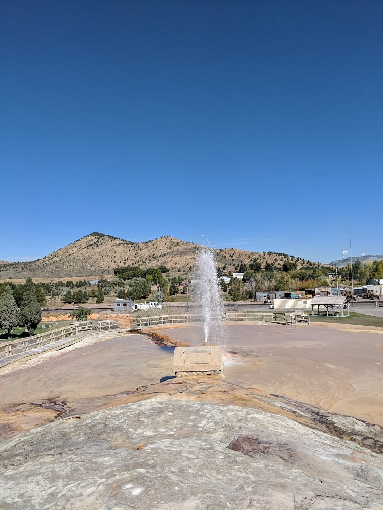

Soda Springs
Weather Summary
Currently: Windy
High: 90°F
Wind Chill:78°F
Humidity: 40%
Wind Speed: 3mph
5-Day Weather Forecast
 89°F
90°F
89°F
90°F
 87°F
87°F
 83°F
83°F
 85°F
85°F
This Tiny Idaho Town Is Hiding Some of The Purest Water On Earth

Soda Springs is a city in Caribou County, Idaho, United States. Its population was 3,058 at the 2010 census.
The city has been the county seat of Caribou County since the county was organized in 1919.
In the 1860s, Soda Springs served as the seat of Oneida County.
The city is named for the hundreds of natural springs of carbonated water that are located in
and around the city. The springs were well known to Native Americans and were a famous landmark
along the Oregon Trail in the middle 19th century. Today the city is also known as the location
of the Soda Springs Geyser, which was unleashed in 1934 when "town fathers" were looking for hot
water for a "hot pool" bathing attraction. Instead, they drilled into a chamber of highly
pressurized carbon dioxide gas and cold water and the geyser was released.
After running for weeks, and flooding the downtown area, it was capped and manually released when
requested as a tourist attraction. Now it is let loose every hour on the hour by a timed-release valve.
Its height and volume have not decreased after many years. There are viewing platforms at either end of
the travertine mound where the geyser erupts. Interpretive signs are located on the platforms explaining
this phenomenon.
Soda Springs is also the location of one of the Ground Observer Corps sites.
Hidden away on the far eastern side of Idaho is the small town of Soda Springs.
This quaint town of just 3,000 people closely resembles any other small town in eastern Idaho,
except for one thing. This place is known for their water. The town’s name even refers to the
fact that the area is covered in numerous natural springs, after all.
You’ll definitely want to stop by Soda Springs and get a taste of the natural spring water that you can find all around town.
Here you can get a taste of the purest water you’ve ever tasted. Trust us.
You’ve never had water like this before. The little town of Soda Springs is located off of U.S.
Route 30 about an hour away from Pocatello. It's a secluded town, surrounded by farmland, hills,
and not much else.